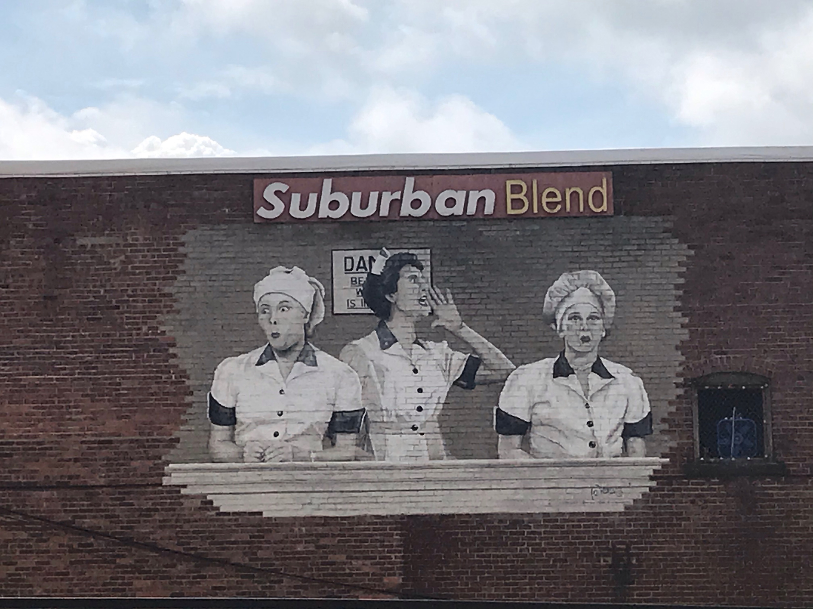

Site1
“California, Here We Come!” Mural
33 Forest Ave., Jamestown, NY
Driving Directions
From the Lucille Ball Desi Arnaz Museum, take Main St. southbound toward Harrison St.
Turn right on Harrison St.
Turn left on Forest Ave.
Destination on your left.
This 1,800-square-foot work of art is the world’s largest I Love Lucy mural, painted by a father-son team of Jamestown natives, Gary Peters, Jr. and Gary Peters, Sr. It took over 500 hours and approximately 30 gallons of paint to complete and was publicly unveiled on October 15, 2012 – the 61st anniversary of I Love Lucy’s debut. The artwork shows Lucy, Ricky, Fred, and Ethel zooming across the George Washington Bridge while singing “California, Here We Come” in a classic I Love Lucy episode from 1955. The mural contains two hidden messages. Can you spot them? They include the episode number (110) and the initials of the episode title (“CHWC”).
Site2
Photo Courtesy of the Fenton History Center Collection
The Lucille Ball Little Theatre
18 E. 2nd St., Jamestown, NY
Driving Directions
Continue down Forest Ave.
Turn right on Washington St.
Turn right on 2nd St.
Destination on your right.
Originally the Allen Opera House, and then Shea’s Theater, this venue was once an ornate 2,000-seat vaudeville palace that a young Lucille Ball frequented to watch movies and theatrical performances. Internationally renowned artists including W. C. Fields, Gypsy Rose Lee, and John Philip Sousa performed in this venue. In 1946, Lucille Ball herself appeared on the Shea’s stage to promote the sale of war bonds. During that appearance she told the assembled crowd: “They’ll tell you that California is God’s country...but God’s country is right here in Jamestown. Think of the change of seasons, the gardens, lilacs blooming in the spring—it’s a wonderful, wonderful place.”
The Little Theatre of Jamestown purchased the building in 1968. The Little Theatre is a regional community theater that was formed in 1920. In 1929, 18-year-old Lucille Ball was cast in their production of “Within the Law” – her first stage performance outside of school. In 1991, the theater was formally renamed The Lucille Ball Little Theatre of Jamestown in a ceremony with Ball’s family in attendance. The Little Theater is now New York State’s longest-running community theater organization.
Site3
Lucy & Desi Postage Stamp Mural
300 East 3rd St., Jamestown, NY
Driving Directions
Turn left on Spring St.
Turn right on 3rd St.
Destination on your right.
This is the first I Love Lucy mural painted by the team of Gary Peters, Jr. and Gary Peters, Sr. It depicts Lucy and Desi as featured on the 0.33 cent stamp that debuted on May 26, 1999 as part of the U.S. Postal Service’s “Celebrate the Century” series. I Love Lucy was among 15 cultural touchstones selected by the American public to commemorate the decade of the 1950s, alongside stamps representing rock and roll, muscle cars, 3D movies, the Explorer I launch, and the Korean War.
Site4
Jamestown High School
350 E. 2nd St., Jamestown, NY
Driving Directions
Turn right on Prendergast Ave.
Turn left on 2nd St.
Destination on your right.
On your right is the current Jamestown High School building, which was built in 1934. Lucille Ball attended high school on this site, but in an earlier structure. In 1956, when Lucy brought Desi to Jamestown for the world premiere of the movie Forever, Darling, their helicopter landed on snow-covered fields behind the current building. To welcome them, students stood in formation spelling out the words “HI LUCY DESI” and more than 15,000 people lined the streets of downtown Jamestown to greet their motorcade.
Site5
Vitameatavegamin Mural and Lucy & Desi Mural
115 E. 3rd Street, Jamestown NY
Driving Directions
Turn left on Foote Ave.
Turn left on Fourth St.
Turn left on Spring St.
Destination on your right.
On your right, you will see two more larger-than-life murals by Gary Peters, Sr. and Gary Peters, Jr. The first celebrates an iconic scene from the I Love Lucy episode “Lucy Does a TV Commercial”—widely considered among the greatest performances in comedy history. The second mural showcases Lucille Ball alongside Desi Arnaz with his signature straw hat.
Site6
Photo Courtesy of the Fenton History Center Collection
The Reg Lenna Center for Arts
116 E. 3rd Street, Jamestown, NY
Driving Directions
Turn right on Third St.
Destination on your left.
Formerly known as The Palace Theater, this theater was built in 1923 and served as a stop on a thriving national circuit of vaudeville houses that dotted the American landscape during the first half of the 20th century. In 1956, Lucille Ball and Desi Arnaz appeared on its stage together to announce the world premiere of their MGM feature film, Forever, Darling. In 1990, the theater underwent a million-dollar renovation and was renamed the Reg Lenna Center for the Arts.

Photo Courtesy of the Fenton History Center Collection
In her autobiography, Love, Lucy, Lucille Ball recalled how, as a young teen, she “bounced up on the stage of the Palace Theater in Jamestown to be photographed by some traveling shyster who had fallen heir to an old camera and some bad film. That was my first moving picture – something called Tillie the Toiler.”
Site7

“Job Switching” Mural
18 E. 3rd Street, Jamestown, NY
Driving Directions
Continue down Third St.
Destination on your left.
In this final of five murals by Gary Peters Sr. and Jr., Lucy and Ethel are shown in the midst of wrapping chocolates in the beloved I Love Lucy episode, “Job Switching.”
Site8
Photo Courtesy of the Fenton History Center Collection
The Hotel Jamestown
106 W. 3rd St., Jamestown NY
Driving Directions
Continue on 3rd St. to the corner of 3rd St. and Cherry St.
Destination on your right.
The Hotel Jamestown was once a luxury hotel that hosted celebrities and visiting luminaries in its famous chandeliered Crystal Ballroom. Lucille Ball stayed in this hotel during her return visits to Jamestown, including a 1944 trip to mourn the death of her grandfather, Fred Hunt, and a 1946 war bond tour. In 1956, when she and Desi visited Jamestown together, they ate breakfast every morning in the coffee shop while talking with reporters and fans.
Site9
The National Comedy Center
203 W. 2nd Street, Jamestown, NY
Driving Directions
Continue down Third St.
Turn left on Jefferson St.
Turn left on Second St.
Destination on your right.
This building once housed the Jamestown Gateway Train Station, which was built in 1931 and closed in 1970. The historic art deco building was meticulously restored before becoming the home of the National Comedy Center in 2018. The Comedy Center is based on Lucille Ball’s vision for her hometown to become a destination for the celebration of comedy—in all its forms. Featuring cutting-edge interactive exhibits and artifact displays, the attraction chronicles the history of the artform from vaudeville to viral memes. The National Comedy Center is the United States’ official cultural institution dedicated to preserving and presenting the vital story of comedy. The Comedy Center was recently named the Best New Museum by USA Today and one of TIME’s World’s Greatest Places.
Site10
Photo Courtesy of the Fenton History Center Collection
The Wilcox Apartments
305 East 5th Street, Jamestown, NY
This is a private residence.
Do Not Disturb the Occupants
Driving Directions
Continue on Second St., staying in the left lane
Turn left onto Washington St.
Turn right onto Fifth St.
Destination on your left.
Lucille Ball spent her earliest years in the nearby town of Celoron, at the home of her maternal grandparents, Fred and Florabelle Hunt. Fred sold his home in the late 1920s and, as Lucille writes in her memoir, the family “moved away to a little apartment on Wilcox Avenue in Jamestown. I entered my junior year in a new, strange high school.” The adjustment was not easy for Lucy. In an attempt to find an outlet for her restless daughter’s energy, Lucy’s mother, Dede, gathered the family at dinner here inside the Wilcox Ave. apartment and asked: “Lucille, how would you like to go to dramatic school?”
Site11
Photo Courtesy of the Fenton History Center Collection
Lucy’s Birth Home
69 Stewart Avenue, Jamestown, NY
This is a private residence.
Do Not Disturb the Occupants
Driving Directions
Turn left on American Pl.
Turn left on 6th St., stay in the right lane
Continue onto Fairmount Ave.
Turn left on Stewart Ave.
Destination on your left.
The house on the left is the birthplace of Lucille Ball. At the time of her birth, her grandparents, Fred and Florabelle Hunt, lived in the upstairs apartment. Lucy’s mother and father—Dede and Henry Ball—had moved to Montana where Henry worked as a telephone lineman. Dede returned home to have her baby and Lucy was delivered by Florabelle at home. After the birth, Dede rejoined Henry in Montana and four years later they moved to Wyandotte, Michigan, where Henry contracted typhoid fever and died in 1915. Dede returned to her parents’ home and Lucy’s brother, Fred, was born in this house five months later.
Site12

Photo Courtesy of the Fenton History Center Collection
Former Site of Celoron School
Corner of Lucy Lane and Alleghany Ave., Celeron, NY
Driving Directions
Continue straight on Stewart Ave.
Turn right onto 3rd St.
Turn left on Fairmount Ave.
Turn right on Dunham Ave.
Turn left on Lucy Lane
Destination on your left.
Lucy went to grade school on this site, though the original schoolhouse has since been demolished. In her memoir, Lucy recalled that “the little red brick Celoron schoolhouse which we attended from kindergarten through high school was just a block from our house.” It was here that Lucy met her beloved teacher, Miss Lillian Appleby, who encouraged her to channel her artistic and expressive abilities into acting. (Lucille Ball tributed her teacher by naming a character in the I Love Lucy television show after her.)
Photo Courtesy of the Fenton History Center Collection, Lucille Ball is seated in the front row, second from the left
Lucy became a member of the school’s drama club, where she directed and starred in the play “Charley’s Aunt.” A formative moment in Lucille Ball’s life occurred on this site when her stepfather, Ed Peterson, brought her to see a performance by the renowned monologist Julius Tannen in the school auditorium. As Lucy remembered, “I don’t think a stage career ever occurred to me until that night.”
Site13
The Hunt Family Home
59 Lucy Lane, Jamestown, NY
This is a private residence.
Do Not Disturb the Occupants
Driving Directions
Continue straight on Lucy Lane
Destination on your left.
Lucille Ball’s grandparents, Fred and Florabelle Hunt, owned this home where they resided with Lucy’s mother, Dede and her second husband Ed Peterson, along with Lucy, brother Fred, and cousin Cleo. Lucy’s bedroom was in the back of the house, overlooking a lilac hedge. Lilacs remained Lucille Ball’s favorite flower for the rest of her life. In her memoir, Lucy expressed that she “loved every inch of that weathered shingled house.” In its front parlor, Lucy and her brother staged amateur plays and in the backyard workshop Grandpa Hunt built “sleds and wagons and wheelbarrows, and stilts, pogo sticks, swings, teeter-totters, and treehouses.”
In 1927, the family was devastated when they lost this home in a tragic set of circumstances. While Grandpa Hunt was supervising children during target practice with a .22 caliber rifle, a neighbor boy was accidentally shot and paralyzed. The house was auctioned off to cover legal fees when Grandpa Hunt was charged with reckless and willful endangerment. The family relocated to the Wilcox Apartments in Jamestown.
Site14
Lucille Ball Memorial Park
21 Boulevard Avenue, Jamestown, NY
Driving Directions
Turn right on Jackson St.
Turn right on Livingston Ave.
Turn left on Dunham Ave.
Turn right on Boulevard Ave.
Destination on your left.
This is the former site of Celoron Amusement Park, which featured an early roller coaster and an enormous four-story Ferris wheel—the largest in the world at the time. As the hub of the lively Chautauqua Lake summer vacation destination, Celoron Park boasted an 8,500-seat convention hall, a bandstand where John Philip Sousa often presided, and the famous Pier Ballroom where renowned musical artists like Duke Ellington and Guy Lombardo performed. Picnic boats cruised up and down the lake while thousands of park guests enjoyed pony rides, roller skating, and sideshow performances.
Photo Courtesy of the Fenton History Center Collection, Lucille Ball returns to Celoron Park in the 1940s
As a teenager, Lucille Ball worked at the park during the summers selling hamburgers. As she remembered: “To us, it was as unique and wonderful as Disneyland is today. Any summer evening we could stroll over and watch the fountains of colored water or the spectacular fireworks or see movies on the flickering outdoor screen.”
Site15
The Peterson House
20 12th Street, Jamestown, NY
This is a private residence.
Do Not Disturb the Occupants
Driving Directions
Continue on Boulevard Ave. (Boulevard turns into Jones and Gifford Avenue, then turns into Fairmount Avenue)
Turn left on Eighth St.
Turn left on Washington St.
Turn right on West 12th St.
Destination on your left.
Following the untimely death of Lucille Ball’s father, her mother, Dede, married Ed Peterson and traveled with him for his job. From the age of six until she was about eight and a half, Lucy was sent to live with Ed’s parents, Sophia and Carl Peterson. Grandma and Grandpa Peterson were strict Swedish immigrants who were harsh disciplinarians. Later Lucy would reflect that “I don’t suppose that hard work, discipline, and a perfectionist attitude toward my work did me any harm. And when life seemed unbearable, I learned to live in my imagination, and to step inside other people’s skins—indispensable abilities for an actress.” Despite the litany of chores and punishments she endured, she did develop a lifelong love for crocheting and gardening while living with the Petersons.
Site16
Lakeview Cemetery
901 Lakeview Avenue, Jamestown NY
Driving Directions
Continue on W. 12th St.
Turn left on Main St.
Turn right on Buffalo St.
Turn left on Lakeview Ave.
The main entrance to Lakeview Cemetery is immediately on the left at the corner of Buffalo St. and Lakeview Ave.
Follow the red painted hearts on the pavement to the Ball and Hunt family plots.
Destination on your left.
Lakeview Cemetery dates to 1859 and is the final resting place of many of Lucille Ball’s ancestors and immediate family members. Lucy is buried in the Ball/Hunt family plot along with her parents, grandparents, and brother. As a child, Lucy would bring “great branches of blooming lilacs” to the cemetery on Memorial Day to lay on her grandmother Florabelle’s grave. “Since those days,” she explained in her memoir, “lilac has become almost an obsession with me; someone once interpreted my passion for it as signaling a return to the womb, to Celoron, to the innocent happiness of childhood.”
Lucille Ball Desi Arnaz Museum
2 W. 3rd Street, Jamestown, NY
Driving Directions
To return to the Lucille Ball Desi Arnaz Museum, turn right out of the cemetery’s main entrance
Continue on Lakeview Ave.
Turn right on 6th St.
Turn left on Main St.
Destination on your right.